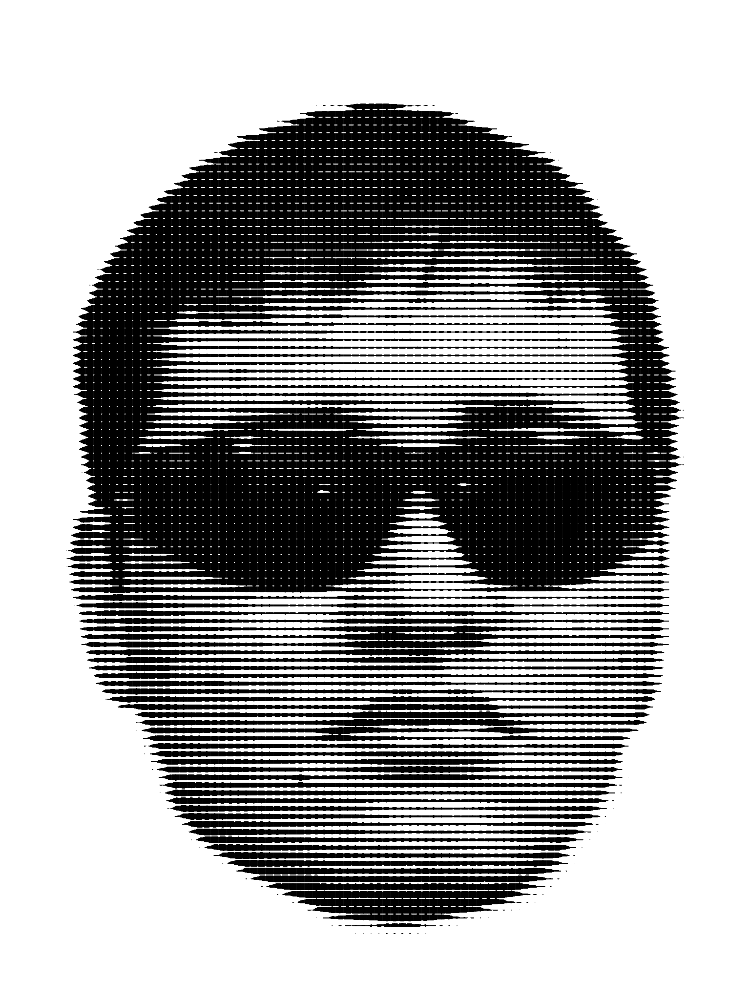

GABI
"Trabajar con HTML y CSS siempre es divertido,
salvo cuando no."
-Gabi

Hola, soy Gabi. Me gustan los payasos, el rock alternativo, las colecciones, y los poemas. Algunos de mis poemas favoritos son: el refrán sueco "La alegría compartida es doble alegría; la tristeza compartida es media tristeza", la canción "Ojalá" de Silvio Rodriguez, y este video.